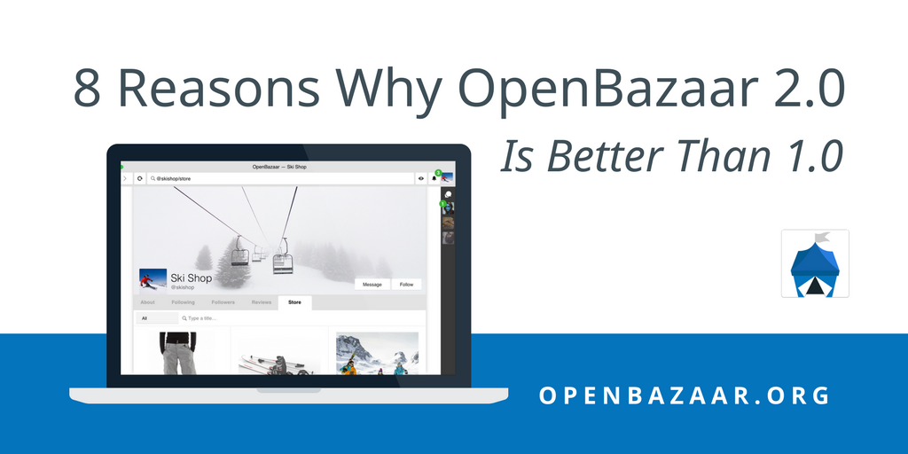
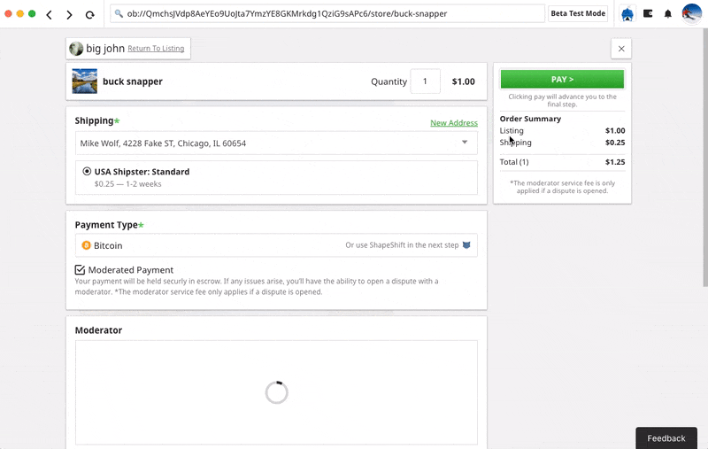
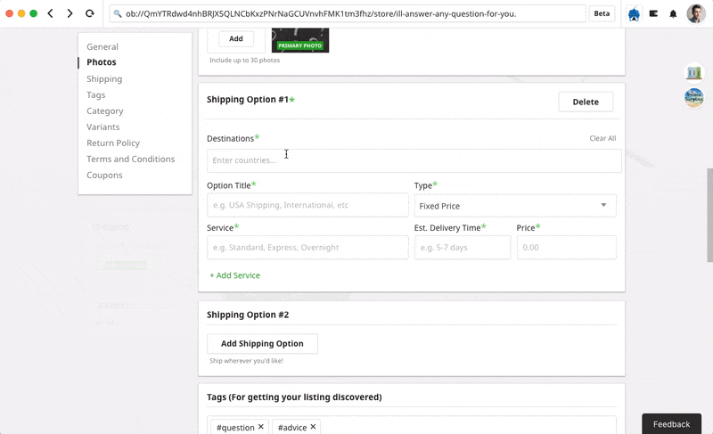
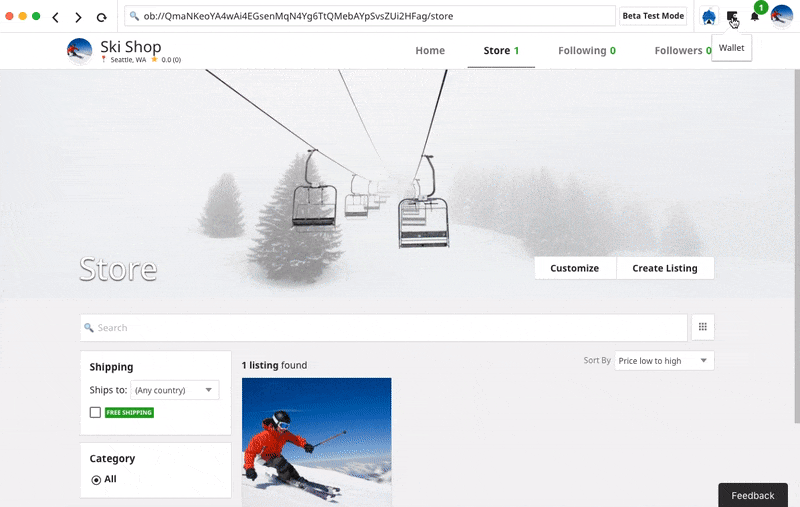

The first version of OpenBazaar launched in April of 2016 and has been used by tens of thousands of people around the world since then.But building the world’s first fully decentralized marketplace is no simple task, and the first version had some limitations. After 250,000+ downloads of version 1.0 we received huge amount of feedback and suggestions–and we’ve taken them to heart.
The culmination of this effort is OpenBazaar 2.0, which is a leap forward upon the first version. Here are 8 reasons why OpenBazaar 2.0 is better than the first version.
1. Your OpenBazaar Store is Available 24/7
The OpenBazaar network is completely peer-to-peer with no middleman. This is great of course, but it used to mean that they needed to be on a computer that was running constantly.
In 2.0 stores can still be accessible even when they aren’t online. This is possible due to us building the OpenBazaar 2.0 network on top of a new technology called IPFS.
IPFS gives OpenBazaar users the ability for their stores and listings to be reseeded by other OpenBazaar users, which happens automatically when you visit another person’s store. Then even if their store goes offline it’s still accessible if others are reseeding it.
2. Even More Privacy with Tor
Tor is a tool that gives users more privacy online. Now OpenBazaar users can run OpenBazaar over Tor to give them even more control over their own privacy.
OpenBazaar doesn’t use Tor by default though. If you want to use Tor with OpenBazaar on Windows, check out this guide. For Ubuntu or OSX users you can use this guide.
3. Improved and Integrated Search Experience

Search is now built into the client itself and there are multiple search providers that users can easily switch between.
4. A Built-In Wallet Makes Transactions Even Easier
In the old version of OpenBazaar people would use an external wallet for their transactions, but the new version has a built-in wallet. This makes transactions incredibly simple by just clicking “Pay from Wallet.”

It also empowers OpenBazaar users to make more complex transactions than they could with an external wallet, such as managing 1-of-2 multisig transactions for offline ordering or using the latest Segwit format.
5. Simplified Store Management
Vendors now have more tools to help them manage their stores, such as inventory management, variants, coupon codes, and detailed shipping options.


6. Easier To Install, Improved Stability
Creating a completely decentralized marketplace is difficult. There are many different operating systems and versions, and every user’s networking setup is unique, leading to an incredible number of possible scenarios to consider. Version 2.0 is substantially improved over the old version in terms of ease of installation and stability. There are many factors behind this improvement, but the bottom line is that our developer community has been working hard for a long time to get it to this point.
7. Interface Redesigned for Simplicity
We received a lot of feedback on how to improve the design of version 1.0 and worked to incorporate much of it into a clean, modern layout. Users will find the experience of shopping and selling on OpenBazaar much improved.

8. Totally Free Ecommerce on More Devices
Peer-to-peer technology is an important new evolution for internet users. We’re excited to be pioneering how people can safely and securely connect their devices directly to one another around the world and we started by building OpenBazaar version 1.0 as a desktop application. Now, because 2.0 is based on IPFS and has incorporated a few other backend design choices, we will soon be able to run OpenBazaar on both mobile and the web. The mobile and web versions are still being built, but once release should make it even easier for people to join the world’s largest decentralized marketplace online.
Try out these new features right now! Download OpenBazaar and join our network in just minutes.
Do you want to help build this with us?
Download OpenBazaar right now to start buying or selling in minutes or just see what's for sale at OpenBazaar.com.
Developers, join us on Github to contribute to this open-source project!